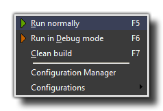

This menu has options that relate to testing your games and to
setting up configurations (note that each of these items has a
corresponding button on the GUI Toolbar):
- Run Normally: This will cause the game to run as if it was finished and installed on the target platform for play testing.
- Run in Debug Mode: This option runs the game in debug mode. For a windows game, this opens another window (apart from the game window) with various debug options to help you debug every aspect of your game. For more information on debugging in GameMaker: Studio, please see the section Advanced Use - Debugging.
- Clean Build: This is the same as clicking the green "broom" icon in the main IDE toolbar, and will clear the asset compiler cache. This is important as it prevents any "stale" assets from corrupting your game. It is not necessary to clear the cache every build, but should you be getting any odd errors or corrupted sprites, it should be done, and it should always be done before building any final packages for deployment..
The following two options are limited to the Professional Version of GameMaker: Studio (and above) and will not be present on other versions:
- Configuration Manager: Selecting this will open the Configurations Manager.
- Configurations: Placing the mouse over this option will open up a sub-menu with a list of all the currently available configurations from which you can select one to use (this shows the same options as the configurations tab in the main GUI.